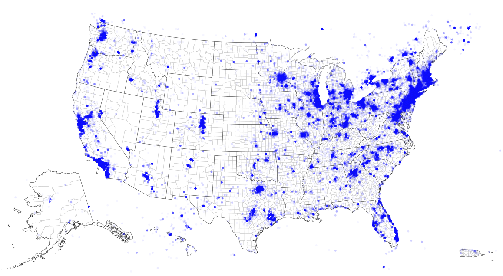

Bloomberg summer 2015 internship
Qualcomm summer 2014 internship
Technical co-founder, Clarity, fall 2013
McKesson RelayHealth summer 2013 internship
CS 161 spring 2015
CS 161 fall 2015
CS 161 spring 2016
CS 160
CS 161
CS 162
CS 168
CS 170
CS 188
CS 189
CS 186
CS 194
EE 120
EE 126
Patent disambiguation at the UC Berkeley Fung Institute, Spring 2013 to fall 2015
Map of Patents Granted in 2010
